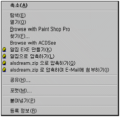
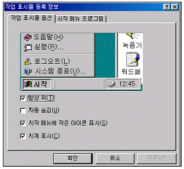
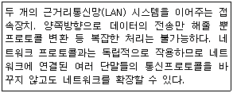
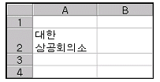
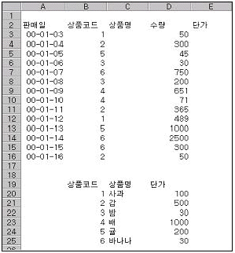
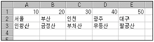
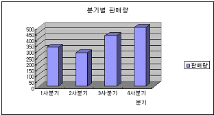
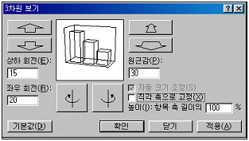
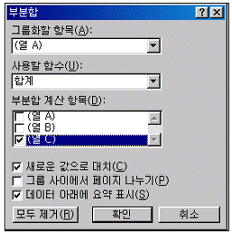
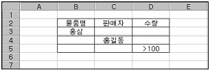

컴퓨터활용능력-2급 (2002-03-17 기출문제)
1과목: 컴퓨터 일반
1. 컴퓨터를 분류하는 방법은 사용 목적, 취급하는 데이터의 형태, 처리능력 등에 따라서 분류를 할 수 있다. 다음 중 컴퓨터가 취급하는 데이터의 형태에 의한 분류에 해당되지 않은 것은?
- 아날로그 컴퓨터
- 디지털 컴퓨터
- 하이브리드 컴퓨터
- 마이크로 컴퓨터
(정답률: 72%)

2. 1기가 바이트(Giga Byte)는 몇 바이트(Byte)인가?
- 1024 Byte
- 1024 × 1024 Byte
- 1024 × 1024 × 1024 Byte
- 1024 × 1024 × 1024 × 1024 Byte
(정답률: 76%)
3. 다음 중 디스크의 공간을 충분히 확보하기 위한 방법으로 가장 적절하지 않은 것은?
- 필요 없는 파일들을 삭제한다.
- 사용하지 않은 프로그램들을 삭제한다.
- [디스크 공간 늘림]을 사용한다.
- 사용하지 않는 단축 아이콘들을 삭제한다.
(정답률: 66%)
4. 다음 중 컴퓨터 디스크의 인터페이스 방식에 해당하지 않는 것은?
- IDE
- EIDE
- SCSI
- AGP
(정답률: 69%)
5. 다음은 주기억장치와 보조기억장치를 비교 설명한 것이다. 올바르지 않은 것은?
- 주기억장치는 중앙처리장치가 직접 사용할 수 있는 정보를 기억시켜 놓은 기억장치이다.
- 보조기억장치에 기억되어 있는 정보는 중앙처리장치가 직접 사용할 수 없으므로 일단 주기억장치에 읽어들인 후에 사용하여야 한다.
- 주기억장치와 보조기억장치를 구성하는 기억소자는 빠른 접근속도를 위하여 같은 기억 소자를 사용한다.
- 일반적으로 주기억장치의 용량은 보조기억장치 보다 휠씬 작다.
(정답률: 46%)
6. FAT(File Allocation Table)는 파일 할당 테이블로서 디스크에 존재하는 파일의 정보가 저장되어 있는 섹터들을 찾아 볼 수 있도록 정보를 저장하는 특수영역으로 윈도우 95는 FAT16이라는 파일 시스템을 사용하였으나 윈도우 98은 FAT32를 사용하고 있다. FAT32를 사용하였을 때 장점과 거리가 먼 것은?
- 하드디스크의 공간 낭비를 줄일 수 있다.
- 시스템 안정성이 향상된다.
- 시스템 리소스를 최소화 할 수 있다.
- 하드디스크의 성능은 최적화되나 시스템의 전체 성능은 느려진다.
(정답률: 80%)
7. 마우스의 오른쪽 단추를 누르면 개체의 단축메뉴가 나타나는데, 개체의 형태에 따라 적절한 옵션을 갖고 있다. 다음 그림은 어느 개체의 단추메뉴를 나타낸 것인가?

- 디스크 드라이브
- 폴더 개체
- 파일 개체
- 프로그램 개체
(정답률: 50%)
8. 다음 중 바탕 화면에 바로 가기 아이콘을 만들기 위한 방법으로 옳지 않은 것은?
- 바탕 화면에서 마우스 오른쪽 버튼을 눌러 [새로 만들기]의 [바로 가기] 메뉴를 선택한 후 실행파일을 찾아 바로 가기 아이콘을 생성한다.
- Windows 탐색기에서 실행파일을 마우스 오른쪽 버튼을 눌러 바탕화면으로 드래그 한 후 표시되는 팝업 메뉴에서 [여기에 바로 가기 만들기]를 선택한다.
- Windows 탐색기에서 실행파일을 [Ctrl] 키를 누르면서 바탕화면으로 드래그 한다.
- Windows 탐색기에서 실행파일 선택 후 메뉴의 [복사] 단추를 누른 다음, 바탕화면에서 마우스 오른쪽 버튼을 눌러 표시되는 팝업 메뉴에서 [바로 가기 붙여 넣기]를 선택한다.
(정답률: 67%)
9. Windows의 네트윅을 구성하기 위하여 케이블 직접연결을 이용하려고 한다. 다음 중 케이블 직접연결을 지원하는 통신 프로토콜이 맞게 연결된 것은?
- TCP/IP, NetBEUI
- TCP/IP, IPX/SPX
- IPX/SPX, Token Ring
- IPX/SPX, NetBEUI
(정답률: 50%)
10. 한글 Windows에서 [시작]-[설정]-[제어판]-[마우스]를 선택하여 표시된 [마우스 등록 정보] 대화 상자에서 설정할 수 없는 것은 다음 중 어느 것인가?
- 마우스 포인터의 속도
- 마우스 포인터 모양
- 키보드의 숫자 키를 사용하여 마우스 포인터를 이동
- 왼손잡이 방식으로 마우스 단추 변경
(정답률: 72%)
11. 다음 중 Windows 98의 제어판에서 플로피디스크로 시동할 수 있도록 “시동디스크”를 만들 수 있는 기능을 제공하는 것은 어느 것인가?
- 관리 도구
- 내게 필요한 옵션
- 시스템
- 프로그램 추가/제거
(정답률: 44%)
12. 어떤 정지영상의 한 화소(Pixel)에 8bit가 사용되고 640×480의 공간해상도를 갖는다면 이 한 정지영상의 용량은?
- 307,200 바이트
- 614,400 바이트
- 1,228,800 바이트
- 2,457,600 바이트
(정답률: 45%)
13. 다음 그림은 작업 표시줄의 등록정보를 나타낸 것이다. 옵션 탭에서 항상 위와 자동 숨김을 선택하였을 경우 작업표시줄의 특성을 가장 올바르게 설명한 것은?

- 전체 화면이 표시된 창에서 작업할 때에도 작업 표시줄이 보인다.
- 작업표시줄은 전체 화면이 표시된 창에서 작업할 때에는 숨어 있다가 마우스를 작업표시줄 영역으로 이동하면 나타난다.
- 어떠한 경우에도 화면상에 작업표시줄이 나타나지 않는다.
- 작업표시줄이 항상 화면 위에 표시된다.
(정답률: 53%)
14. 다음 중 ADSL(Asymmetric Digital Subscriber Line)에 대한 설명으로 틀린 것은?
- 비대칭 디지털 가입자 회선이라 한다.
- 비대칭이란 다운로드 속도와 업로드 속도가 다르다는 의미이다.
- 업로드 속도가 다운로드 속도보다 빠르다.
- 기존 전화선을 사용한다.
(정답률: 56%)
15. 다음은 통신망을 구성하는 요소를 설명한 것이다. 알맞은 것은?

- 라우터
- 허브
- 브리지
- 모뎀
(정답률: 61%)
16. 다음 중 컴퓨터 통신망의 종류와 가장 거리가 먼 것은?
- LAN
- MAN
- ISDN
- TCP/IP
(정답률: 61%)
17. 다음 중 전자 메일(e-mail)에 대해서 설명한 내용으로 올바르지 않은 것은?
- 메일은 반드시 메일 서버를 통해서 전송된다.
- 메일의 수신자만 명시하면 내용을 쓰지 않아도 전송된다.
- 메일에 원하는 파일을 첨부해서 보낼 수 있다.
- 메일의 수신자는 반드시 한 명으로 제한된다.
(정답률: 82%)
18. 다음은 인터넷에 관한 설명이다. 틀린 것은?
- 인터넷 웹 문서의 이미지 파일은 파일 형식을 GIF와 PCX만 지원한다.
- 클라이언트와 서버간의 프로토콜로 HTTP가 있다.
- 인터넷 망을 이용하여 회사 내에 업무를 공유하는 네트워크를 구축하는 것을 인트라넷(intranet) 이라 부른다.
- 인터넷상의 파일 전송 프로토콜로 FTP가 있다.
(정답률: 75%)
19. 다음 중 네트워크를 구성하는 장비 및 용어에 관한 설명으로 올바르지 않은 것은?
- 허브(Hub) : 네트워크에서 연결된 각 회선이 모이는 집선장치로서 각 회선을 통합적인 관리를 하는 장비
- 라우터(Router) : 랜을 연결하여 정보를 주고받을 때 송신정보에 포함된 수신처의 주소를 읽고 가장 적절한 통신통로를 이용하여 다른 통신망으로 전송하는 장치로 서로 다른 프로토콜로 운영되는 인터넷을 접속할 때는 반드시 필요한 장비
- 백본(Backbone) : 등뼈 또는 척추의 뜻으로 브랜치랜(Branch LAN) 사이를 연결하도록 설계한 고속 네트워크
- 게이트웨이(Gateway) : 네트워크에서 디지털신호를 일정한 거리 이상으로 전송시키면 출력이 감쇠하는 성질이 있으므로 장거리 전송을 위해서는 이를 새로이 재생시키거나 출력 전압을 높여 주는 장치
(정답률: 67%)
20. 컴퓨터 음악기기의 인터페이스 방법으로 음악 합성기, 디지털 피아노 등의 전자음악기기들을 컴퓨터에 연결하여 제어하고 관리하는 표준 인터페이스는?
- CD
- MIDI
- MP3
- RA
(정답률: 77%)
2과목: 스프레드시트 일반
21. 다음 그림과 같이 한 셀에 두 줄 이상의 데이터를 입력하려고 할 때 사용하는 키는?

- Tab
- Enter
- Alt + Enter
- Ctrl + Enter
(정답률: 77%)
22. [다른 이름으로 저장] 대화상자에서 [도구]-[일반 옵션] 버튼으로 설정할 수 없는 것은?
- 백업 파일 항상 만들기
- 열기/쓰기 암호 설정
- 읽기 전용 확인
- 통합 문서 공유
(정답률: 60%)
23. 시트를 그룹화한 상태에서 [A1]셀에 “스프레드시트”란 단어를 입력하면 그 결과는 어떻게 나타나는가?
- 첫 번째 시트에만 입력되어 나타난다.
- 선택한 시트에 모두 입력되어 나타난다.
- 오류가 나타난다.
- 마지막 시트에만 입력되어 나타난다.
(정답률: 70%)
24. [A1] 셀에 ###.##와 같은 사용자 서식 코드를 지정한 뒤 12345.678이라고 입력했을 때 셀에 표시되는 숫자 형식은?
- 12345.68
- 12345.678
- 123.46
- 123.45
(정답률: 66%)
25. 문제 오류로 모두 맞는걸로 처리한 문제입니다.
- 정답
- 오답
- 오답
- 오답
(정답률: 80%)
26. 다음 중 ROUNDDOWN(10/3, 5)의 결과값은 어느 것인가?
- 3.33333
- 3.3333
- 3.33332
- 3.33334
(정답률: 58%)
27. 다음 중 상대주소, 절대주소, 혼합 주소 사이의 변환에 사용되는 기능 키는 무엇인가?
- F1
- F2
- F3
- F4
(정답률: 67%)
28. 다음 그림의 [E3]셀의 값을 VLOOKUP함수를 이용하여 구하고 채우기 핸들로 모든 단가를 계산하려고 한다. 이때 [E3]셀에 사용된 적절한 함수식은?

- VLOOKUP(B3,$C$20:$D$25,3)
- VLOOKUP(B3,C20:D25,3)
- VLOOKUP(B3,B20:D25,3)
- VLOOKUP(B3,$B$20:$D$25,3)
(정답률: 61%)
29. 다음 그림과 같은 시트에서 함수식 HLOOKUP(36,A1:D3,3)의 결과는?

- 인천
- 부처산
- 광주
- 무등산
(정답률: 59%)
30. 다음 중 차트에 대한 설명 중 잘못된 것은?
- 차트는 크게 2차원 차트와 3차원 차트로 구분할 수 있다.
- 일반적으로 워크시트의 내용이 변해도 차트의 내용은 변하지 않는다.
- 차트만 별도로 표시할 수 있는 차트시트를 만들 수 있다.
- 워크시트의 데이터를 막대, 선, 도형 등을 사용하여 시각적으로 표현한 것이다.
(정답률: 72%)
31. 다음은 [편집]-[찾기]에 대한 설명이다. 옳지 않은 것은?
- 수식, 메모를 찾기 할 수 있다.
- 조건부 서식은 찾을 수 없다.
- 행, 열이 찾는 방향을 지정할 수 있다.
- [찾기]의 단축키는 Ctrl + E 이다.
(정답률: 52%)
32. 다음 차트에서 설정되지 않은 옵션은?

- 범례
- 차트제목
- 축 제목
- 데이터 이름표
(정답률: 56%)
33. 다음 그림에 관한 설명으로 올바른 것은?

- 3차원 보기는 막대형 차트에서만 볼 수 있다.
- [기본값] 단추를 누르면 2차원 차트로 변경된다.
- 차트의 회전은 메뉴를 통해서만 가능하다.
- 차트를 선택하고 단축메뉴에서 [3차원 보기]를 선택하면 볼 수 있다.
(정답률: 53%)
34. 다음은 ‘창 나누기’와 ‘틀 고정’에 대한 설명이다. 잘못된 것은?
- 창 나누기는 워크시트를 여러 개의 창으로 분리하는 기능으로 최대 4개로 분할할 수 있다.
- 메뉴 [창]-[나누기]를 선택하여 창 나누기를 한다.
- 틀 고정은 마우스로 끌어서 위치를 변경할 수 있다.
- 메뉴 [창]-[틀 고정]을 선택하면 현재 셀 포인터의 왼쪽 위쪽에서 틀 고정선이 나타난다.
(정답률: 59%)
35. 4페이지의 분량을 인쇄하려고 한다. 이 때 각 페이지상단에 작성자의 이름을 넣으려 할 때 지정하는 옵션은?
- 시트이름
- 쪽이름
- 머리글
- 여백지정
(정답률: 68%)
36. 다음 그림은 무엇에 대한 대화상자인가?

- 옵션
- 부분합
- 정렬
- 유효성 검사
(정답률: 79%)
37. 다음 중 매크로에 대한 설명으로 잘못된 것은?
- 매크로를 작성할 때 지정한 단축키를 이용하면 매크로를 실행할 수 있다.
- 매크로에서 할당되는 도구 버튼을 만들어 실행할 수 있다.
- 동작이 끝나기 전에 매크로를 중지시키려면 Esc 키를 누른다.
- 단축키를 이용할 때는 반드시 기본적으로 Alt 키를 사용하야여 한다.
(정답률: 68%)
38. 상품 가격이 2,500원 짜리 물건에 대하여 총 판매액이 1,500, 000원이 되게 하기 위해서는 판매수량이 얼마나 되어야 하는지 알아보기 위해 사용되는 유용한 기능은?
- 피벗 테이블
- 목표값 찾기
- 시나리오
- 레코드 관리
(정답률: 77%)
39. 다음 그림은 고급 필터를 적용하기 위한 조건을 지정한 것이다. 설명으로 적당한 것은?

- 물품 종류가 홍삼이고 판매자가 홍길동이며 판매 수량이 100 보다 큰 조건
- 물품 종류가 홍삼이거나 판매자가 홍길동이거나 판매 수량이 100 보다 큰 조건
- 물품 종류가 홍삼이고 판매자가 홍길동이거나 판매 수량이 100 보다 큰 조건
- 물품 종류가 홍삼이거나 판매자가 홍길동이며 판매 수량이 100 보다 큰 조건
(정답률: 69%)
40. 다음 중 매크로에 관한 설명으로 틀린 것은?
- 매크로 이름의 첫 글자는 영문자나 한글, 한자이어야 한다.
- 서로 다른 매크로에 동일한 매크로 이름을 부여할 수 있다.
- 매크로가 들어 있는 통합 문서가 열려 있으면, 매크로 실행의 바로 가기 키가 기본 바로 가기 키보다 우선이다.
- 매크로 이름의 첫 글자를 제외하고는 문자, 숫자 등을 혼합하여 사용할 수 있으며 공백은 사용할 수 없다.
(정답률: 53%)